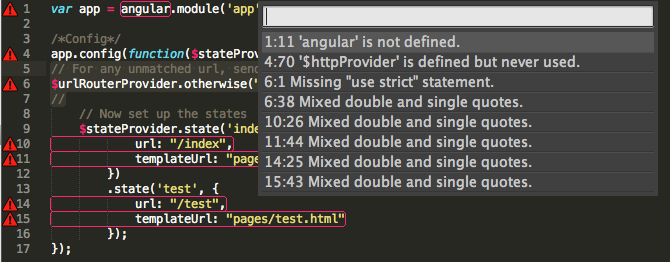
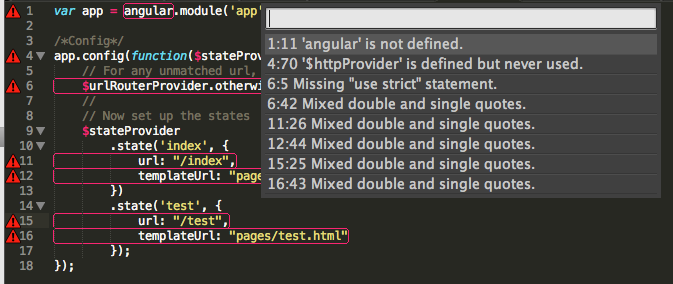
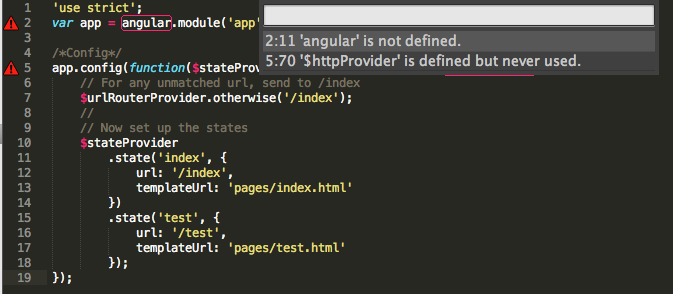
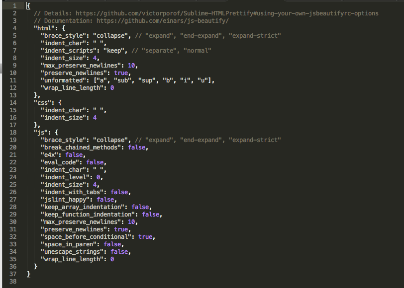
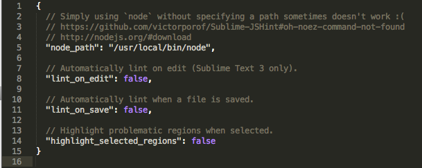

寫 JavaScript的時候常常會因為他多元的用法(結構較為鬆散或是說它組合較多元)而感到困惑，或因為不好的習慣導致自己浪費了大量效能做出一個很簡單的東西，這邊要如何驗證自己寫的Javascript有沒有水準符不符合基本規範呢？此時除了定義一些開發上面的規範外，我們還需要一些工具來幫我們做檢查，JSLint就是這行的老牌子工具。
JSLint VS JSHint
JSLint 定義了一組比 ECMAScript Language Specification 第三版(應該沒比第五版嚴謹，這部分還在追查)所定義的規格中更嚴謹的規格來驗證你的 JavaScript，這邊找到保哥幾年前寫的文章介紹，有興趣的可以進去看看摟。
而JSHint是JSLint其中一個分支，為什麼寫這個分支的理由在此：Why I forked jslint to jshint?．而簡單來講，因為在實務上有些JSLint規範太過嚴格的部分作出了部分的取捨而成的子集就成為了JSHint，而JSHint也還可以讓你自行條件檢查的修改，看是否要開啓或關閉。
Sublime Text2版
前置工作
- 安裝Sublime Text2
- 安裝Package Control
- 透過Package Control安裝JSHint套件
實際使用流程
實際經驗是告訴我最好先用html-css-js pretty先做過一次排版你可以少掉很多問題～
流程上就是先按下command+shift+H用html-css-js pretty從新整理你的code，然後再按下command+shit+J用JSHint來檢查：
以下是原始版本：

整理完的的版本：

按下JSHint修改完的版本：

小小一段code 是不是差異很多啊！，最後的版本會看到它還是有提醒我有兩個沒通過的檢查，但因為這邊跟我使用AngularJS與AngularJS UI-Routing的套件有關，所以我們可以不用管它，這份code就可以開心上git摟!
條件修改
如果對於預設的檢測需要做條件修改，可到上方的Tools->JSHint->Set Linting Preferences就可以進去修改了，如下：

至於有什麼可以修改的就參考官方說明摟
環境設定
除了一般手動檢查外，我們也可以透過Tools->JSHint->Set Plug Options 設定Sublime Text2插件在環境的特殊選項，讓他在每次編輯或是存檔的時候幫我們做自動檢查。

結語
在很早很早以前，當JSLint剛推出的時候還要上官網把自己的code放進去檢查，現在在開發時的時候就可以養成良好的開發習慣了，小細節成就偉大！千萬不要養成不好的寫法與習慣啊！
而對於最新的ECMA Script5這邊有些JSLint與JSHint的檢查比較，對於這塊還不能很深刻做專研但看來JSLint目前對於ES5的支援是很悲劇的ＱＱ。